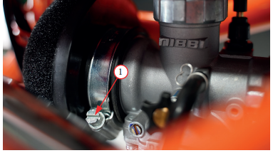
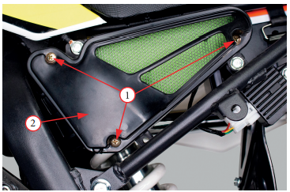
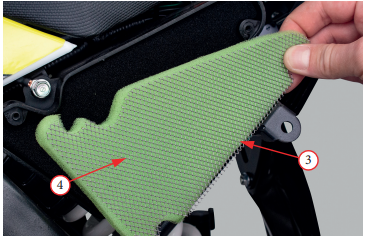
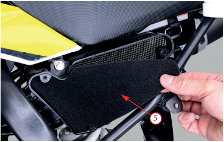

Обслуживание воздушного фильтра открытого типа
- Ослабьте
хомут
1, фиксирующий патрубок воздушного фильтра на карбюраторе (процедура может отличаться, в зависимости от модели питбайка)
- Снимите узел воздушного фильтра в сборе. Будьте предельно аккуратны, чтобы не повредить фильтрующий элемент
- Внимательно осмотрите воздушный фильтр на предмет разрывов, трещин и прочих повреждений. В случае обнаружения любых внешних повреждений, воздушный фильтр должен быть обязательно заменен на новый
- Оцените степень загрязнения воздушного фильтра. В зависимости от типа установленного фильтра, его требуется:
- если питбайк оборудован необслуживаемым фильтром, его необходимо заменить на аналогичный
- если на питбайк установлен поролоновый обслуживаемый фильтр, его необходимо промыть и смазать
- Промойте поролоновый фильтрующий элемент с помощью специального средства для очистки воздушных фильтров (например, Maxima Air Cleaner). В исключительных случаях можно использовать мягкие негорючие растворители. Никогда не используйте бензин для очистки воздушного фильтра, т.к. это легко может привести фильтрующий элемент в негодность
- Промойте фильтрующий элемент в теплом мыльном растворе, прополощите и тщательно просушите
- После просушки элемента необходимо пропитать его специальным маслом для пропитки поролоновых фильтров (например,
Maxima FAB-1). Излишки масла удалить выжиманием
- После пропитки воздушного фильтра его следует установить обратно на карбюратор. Будьте предельно аккуратны, чтобы не
повредить фильтрующий элемент
- После установки воздушного фильтра, обязательно затяните
хомут
1, фиксирующий патрубок воздушного фильтра на карбюраторе
Обслуживание воздушного фильтра закрытого типа (фильтр-бокс)
- Освободите доступ к корпусу воздушного фильтра (процедура может отличаться, в зависимости от модели питбайка)
- Выкрутите три
винта
1, фиксирующих крышку корпуса воздушного фильтра
2 и снимите крышку
- Снимите наружную
металлическую сетку
3, поролоновые элементы воздушного фильтра (внешний
4 и внутренний
5). Будьте предельно аккуратны, чтобы не повредить фильтрующие элементы
- Внимательно осмотрите воздушный фильтр на предмет разрывов, трещин и прочих повреждений. В случае обнаружения любых повреждений, воздушный фильтр должен быть обязательно заменен на новый
- Промойте поролоновые фильтрующие элементы
4
и 5
с
помощью специального средства для очистки воздушных
фильтров (например, Maxima Air Cleaner). В исключительных случаях можно использовать мягкие негорючие растворители. Никогда не используйте бензин для очистки
воздушного фильтра, т.к. это легко может привести фильтрующий элемент в негодность
- Промойте фильтрующие элементы
4
и 5
в теплом мыльном
растворе, прополощите и тщательно просушите
- После просушки необходимо пропитать внутренний
поролоновый элемент
5 специальным маслом для пропитки поролоновых фильтров (например, Maxima FAB-1). Излишки
масла удалить выжиманием
- После пропитки установите внутренний
поролоновый
элемент
5 в корпус воздушного фильтра, затем верните на
место внешний поролоновый элемент
4 и наружную металлическую сетку
3. Будьте предельно аккуратны, чтобы не
повредить фильтрующий элемент
- Установите на место крышку корпуса
воздушного фильтра
2
и затяните тремя винтами
1 с моментом 1 Н•м